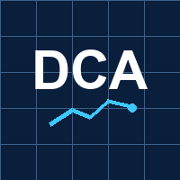
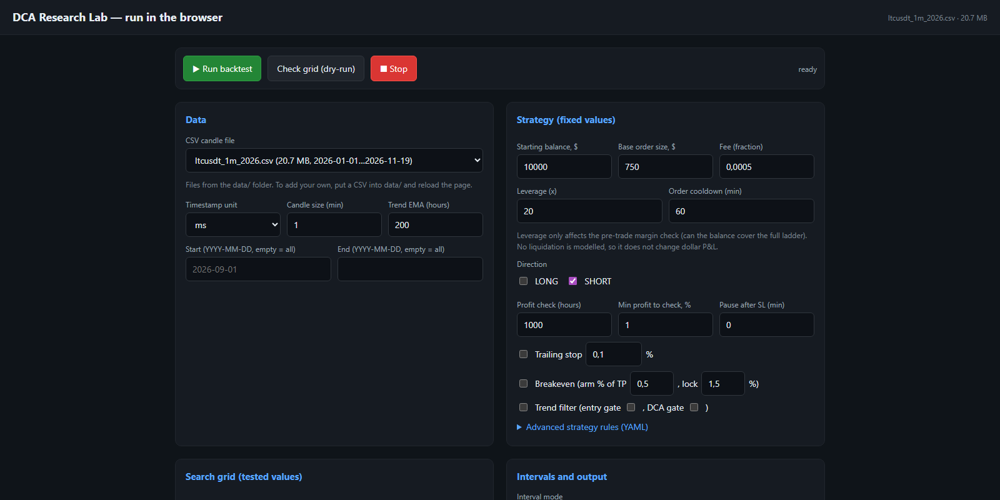
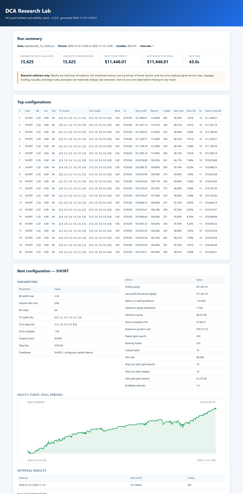

Fast backtest engine
Numba-accelerated core runs a full parameter grid without leaving Python.

DCA Research LabA Python research tool that loads your local OHLCV data, runs a parameter grid over multiple intervals, ranks the results, and replays the best configurations into a self-contained HTML report.
Windows · macOS · Linux — Python 3.10+, runs fully offline.

Numba-accelerated core runs a full parameter grid without leaving Python.
BB width, volume ratio, RSI, TP matrix, DCA steps, multiplier, timeout, and stop loss.
Manual or randomized intervals, ranked by total profit, worst interval, or risk-adjusted score.
Run the strategy in either direction, or let the engine trade both sides.
Equity curve, drawdown, DCA distribution, and stop-loss trades for the best configs.
No CDN, no network access. The report opens offline in any browser.
Generic OHLCV loader. Real 2026 LTC/USDT 1-minute candles included, plus synthetic demo data.
Configure via YAML or CLI overrides, then launch the search — in the terminal or the local web UI.
HTML + CSV + JSON output with a full replay you can share and archive.
Every run produces an equity curve, drawdown chart, and trade-level detail.

$19 one-time
run.py CLI and webapp.py local web UIAvailable on Codester, CodeCanyon, Whop, and FastSpring.